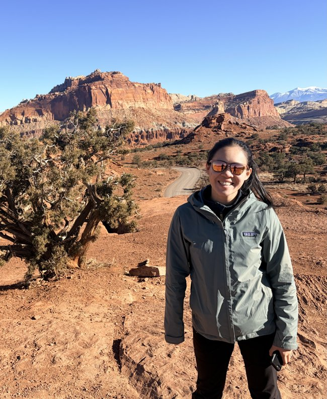

Colette →
A simple iOS app for tracking food spending, named after my favourite neighbourhood bakery.
A clearer welcome: a concise introduction, two obvious next steps, and a small selection of work. My recommendation for a balanced personal homepage.
Currently in Boston · Home is Hong Kong
I trade risk, build tools, and spend the rest of my time asking questions.
I studied political thought and computer science before drifting into equities trading. Both still find their way into what I do.

A simple iOS app for tracking food spending, named after my favourite neighbourhood bakery.
Exploring Hong Kong IPO performance from 2024 to June 2026, and the questions it raises for trading.
Away from markets, I’m drawn to history, languages, and long days on foot. I keep maps of my travels and a log of what I’m reading here, too.
p.s. Garden Leave is my personal journal. Very little actual gardening.
Last gig: event-driven trader at a platform hedge fund.
I speak English, Mandarin, and Cantonese fluently, conversational French and Japanese, and read some German.
Boston, for now. Hong Kong, always.
I trade risk, build tools on the side, and ask more questions than I answer.
I studied political thought and computer science before finding my way into equities trading. The philosophy and engineering sides never quite left.
This is a little home for the things I make, think about, and keep. There are experiments with AI, notes from garden leave, and a growing collection of places and reading.
Stay a while. Take whichever path looks interesting.
Kelly
Long walks, long runs, history. English, Mandarin, Cantonese; some French and Japanese; and a little German on the page.
p.s. The garden remains largely theoretical.
Boston / Hong Kong
I’m Kelly: an equities trader with an enduring interest in engineering and political thought.
This is where I keep what I’m building, reading, and thinking about.
Garden Leave · 18 September 2026
Notes after a panel at Harvard Law School and reading Polly Barton’s Fifty Sounds—with friends in Boston and a trip to New Hampshire in between.
Read the journal →A project to explore
An AI equity research analyst that uses tools, plans research, evaluates findings, and generates reports.
Open the engineering notebook →Collected along the way
Travel maps and a reading log: a record of where I’ve been and what has caught my attention.
p.s. “Garden Leave” includes very little actual gardening.